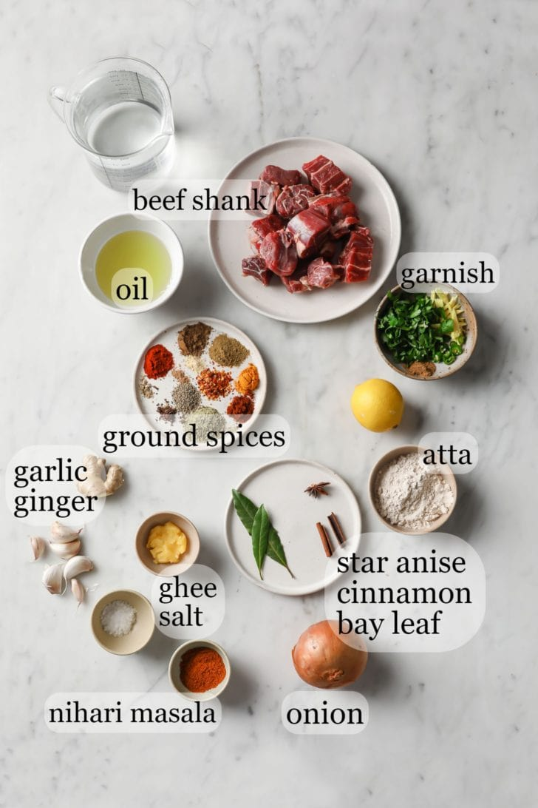

Nihari is a rich, slow-cooked meat stew flavored with spices and thickened with atta, or Pakistani & Indian-style durum whole wheat flour. Pakistani versions of Nihari are typically made with beef, but Nihari can be made with lamb, goat meat, or chicken.
The word “nihari” comes from the root Arabic word “nahar”, meaning “day” or “morning”.
This dish is called Nihari because originally, it was eaten in the morning. The history suggests that it started in Old Delhi, where it was eaten by Mughal nawabs and workmen to fuel them throughout the day.
Other than an unapologetically long list of spices, Nihari requires simple ingredients commonly found in Pakistani cuisine:
Traditionally, atta flour, which is typically used to make rotis, is added to thicken the curry. I highly recommend you use this for an authentic taste.
This recipe requires either store-bought or homemade Nihari Masala Powder (recipe below!) along with a few other whole & ground spices.